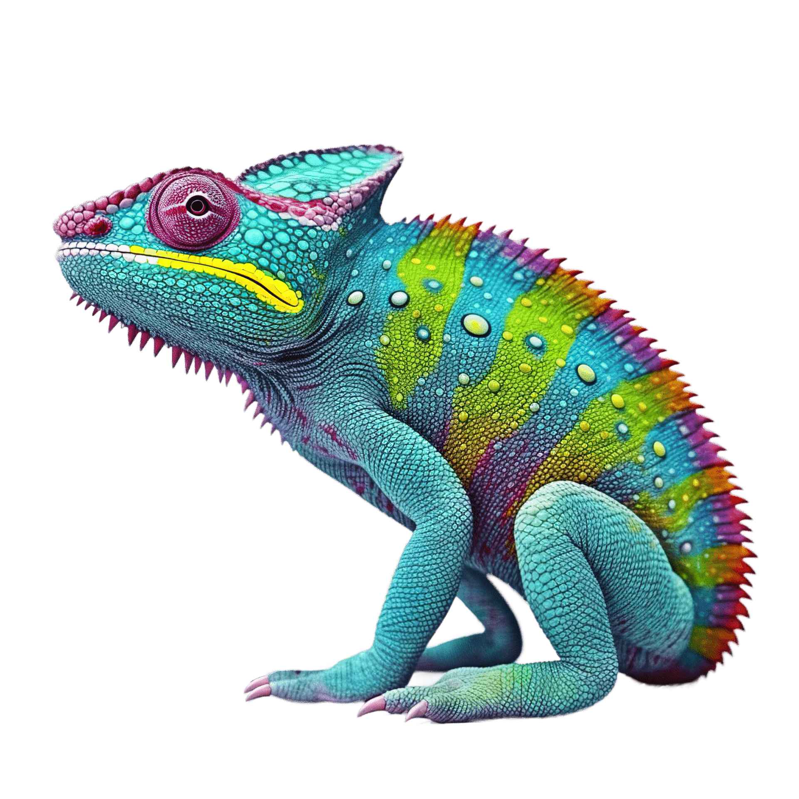

Chameleons are a distinctive family of climbing lizards known for their ability to change color and
the extraordinary speed and range of their long tongues, used to capture prey like insects and small
vertebrates. Found in warm habitats ranging from rainforests to deserts, most chameleons have
prehensile tails, feet suited to grasping branches, and eyes that can rotate independently.